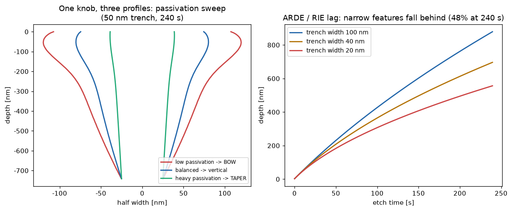
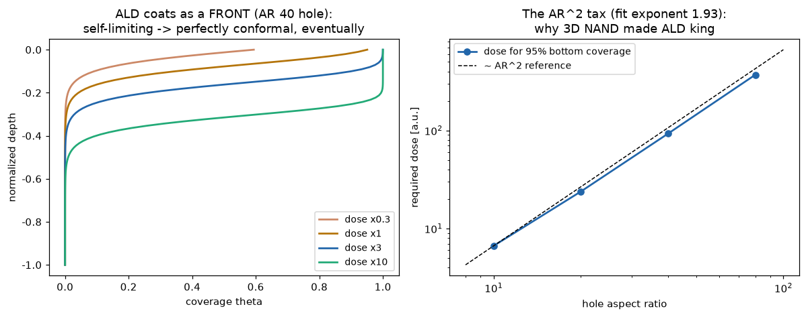

プロセス装置が売っているのは「形の制御」。高ARトレンチのプロファイル進化（ボーイング/テーパ/ARDE）とALDの被覆前線とAR²ドーズ則という、エッチ&成膜の核心2テーマを縮約物理モデルで定量化した。
高ARトレンチは3つの競合フラックスで形が決まる：垂直イオンエッチ（AR依存輸送で減速）・側壁の等方化学攻撃（パッシベーション膜で抑制）・開口部近傍のイオン散乱（ボーイングの正体）。縮約プロファイルモデルを時間発展させると、パッシベーション量1つで bowed（弱）→ 垂直（適正）→ tapered（過多）を掃引——エッチレシピ調整の会話全体が1パラメータに凝縮される。

右図はARDE（RIEラグ）：輸送制限 dD/dt = R₀/(1+AR/K) により、240秒で20nm溝は開口部の52%しか掘れない。3D NANDのチャネルホールが「深さの戦争」である理由。出所：telproc/etch_ald.py。
自己制限プリカーサの穴内輸送を準静的 反応-拡散（ALDの標準扱い：ガス輸送はサイト充填より速い）で解く：c''=K²(1−θ)c、Thiele数²∝AR²。被覆は前線として進み（口元から順に飽和）、自己制限ゆえ最終的には完全コンフォーマル——ただし底まで届く必要ドーズはAR²で増える（数値フィット指数1.93）。AR80の穴はAR10の55倍のドーズ。3D NAND時代にALDが王になった理由の定量版。

関連（実装済み・別モジュール）：optimization/tel_feol_bo.py（FEOLプロセスのベイズ最適化）・optimization/tel_tmcmc_calibration.py（TMCMCキャリブレーション）・vision/cpp/src/cmp.cpp（CMP APC/EPD）。